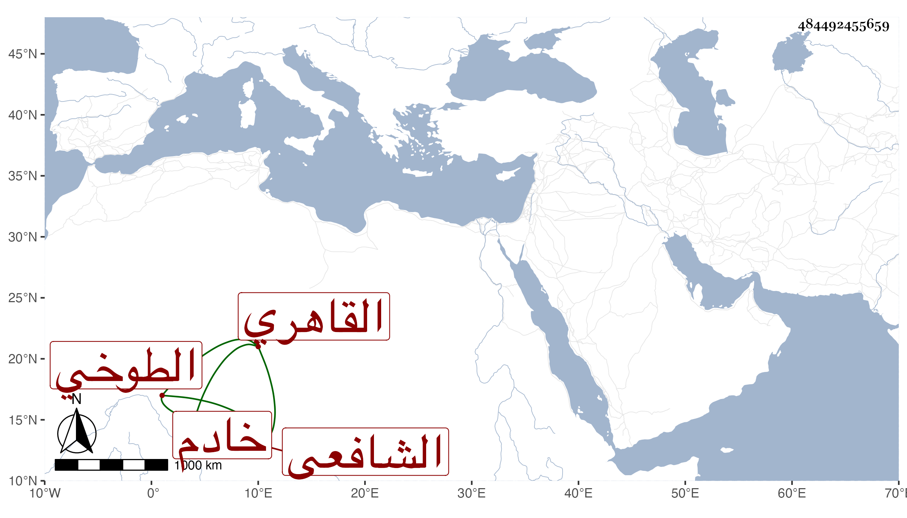

0902Sakhawi.DawLamic.ITO20230111-ara1.EIS1600.484492455659
Biography ID: 484492455659
472
أحمد بن محمد بن قاسم الشهاب الطوخي ثم القاهري الشافعي خادم الجمالية . ولد في صفر سنة ثلاث وثمانين وسبعمائة واشتغل وتنزل في الجهات . وصحب نصر الله الروياني وابن أبي الوفاء وتسلك ، وأخشى أن يكون على طريقتهما وسمع الحديث على ابن الكويك والولي العراقي وكان سنه يحتمل أقدم منهما ، وقرره جمال الدين كاتب غيبة مدرسته وربما كان ينوب عنه فيها الجلال القمصي ولذا كان خادما بها ، وكان مديما للعبادة والخير بهيا نير الشيبة حسن السمت على ذهنه فوائد ونوادر حملت عنه أشياء . ومات في يوم الخميس ثاني عشر ذي الحجة سنة ثلاث وخمسين بعد أن تعلل مدة واستقر بعده في الخدمة الشمس ابن أخت الشيخ مدين رحمه الله وعفا عنه وإيانا .
